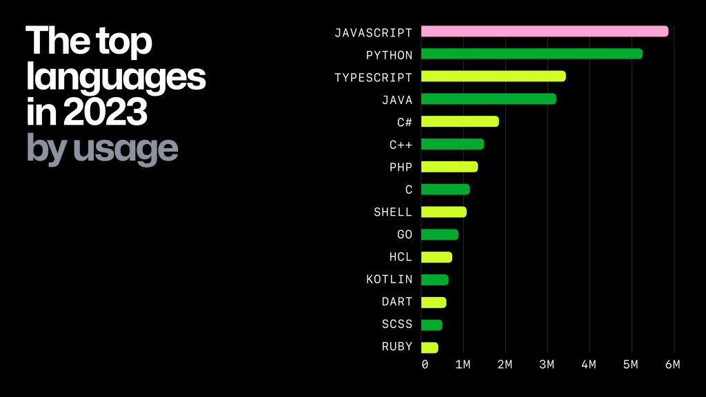
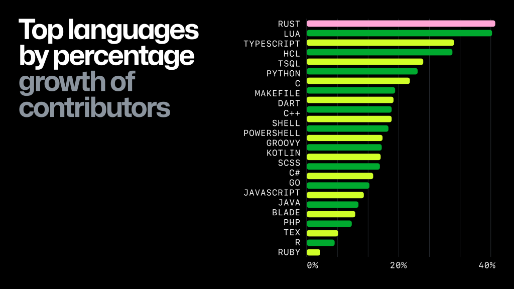
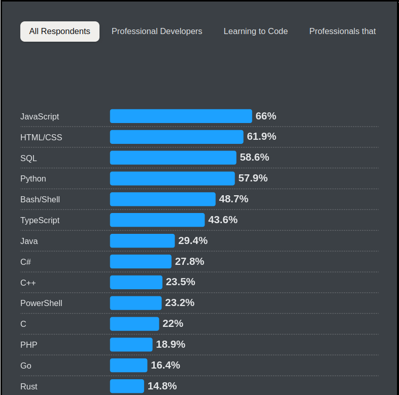
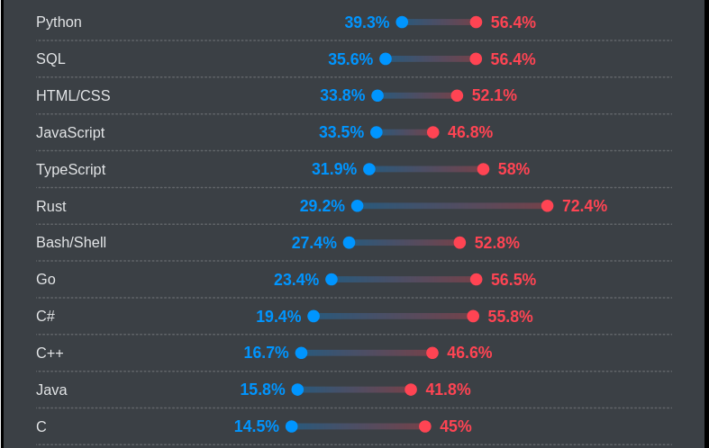

Programming for Robots: Software-in-the-Loop (SITL), Rust
Oct 17, 2025
Software-in-the-loop: Execute at least some part of the software that would run on the robot for simulation or validation.
Hardware-in-the-loop: Execute at least some part of the software on the robot for simulation or validation.
Useful principle outside SIL: High-speed implementation in C/C++ and ease-of-use through Python bindings is typical for modern projects (e.g., PyTorch, numpy).




Source, Blue=Admired, Red=Desired
Professional Usage
Academia
I used the book.
Interoperability (e.g., calling Rust from C/C++ and vice versa) possible
computeObservation(x)=xrobotBehavior(...)=fixed valueintegrateDynamics(x, u, delta_t) initial value problem (ODE solver!)\[ \mathbf{x}_{t+\Delta t} = \mathbf{x}_t + f(\mathbf{x}_t, \mathbf{u}_t) \cdot \Delta t \]
\[ \begin{align} \mathbf{x}_{t+\Delta t} &= \mathbf{x}_t + \frac{\Delta t}{6} (k_1 + 2 k_2 + 2 k_3 + k_4)\\ k_1 &= f(\mathbf{x}_t, \mathbf{u}_t)\\ k_2 &= f(\mathbf{x}_t + \Delta t \frac{k_1}{2}, \mathbf{u}_t)\\ k_3 &= f(\mathbf{x}_t + \Delta t \frac{k_2}{2}, \mathbf{u}_t)\\ k_4 &= f(\mathbf{x}_t + \Delta t k_3, \mathbf{u}_t) \end{align} \]
More function evaluations of \(f\) needed
More accurate (allows larger \(\Delta t\))
struct Multirotor1dState {
z: f32,
z_dot: f32,
}
struct Multirotor1dAction {
f1: f32,
}
struct Multirotor1d {
mass: f32,
g: f32,
dt: f32,
x: Multirotor1dState,
}
impl Multirotor1d {
fn step(&mut self, action: Multirotor1dAction) {
let z_new = self.x.z + self.x.z_dot * self.dt;
let z_dot_new = self.x.z_dot + ((action.f1 / self.mass) - self.g) * self.dt;
self.x.z = z_new;
self.x.z_dot = z_dot_new;
}
}(Demo the code)
Meshcat
(Small demo of meshcat Rust)
(Demo the provided example code)
Assignment 0: Build a 2D Multirotor Simulator
?